Happo-emäs harjoitustapauksin
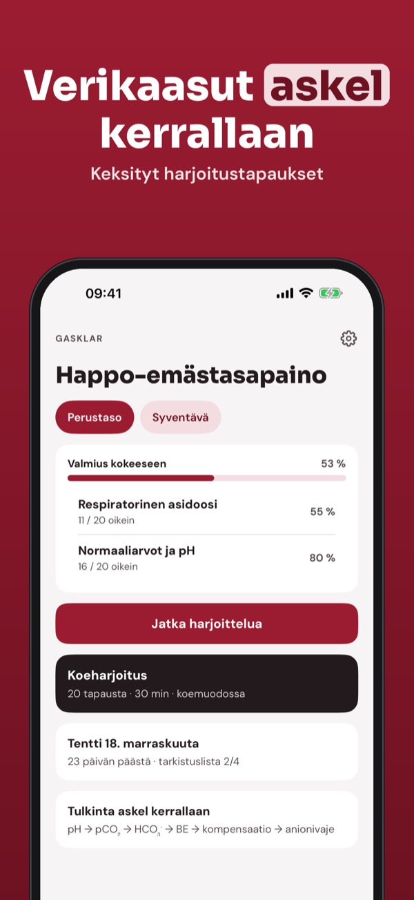
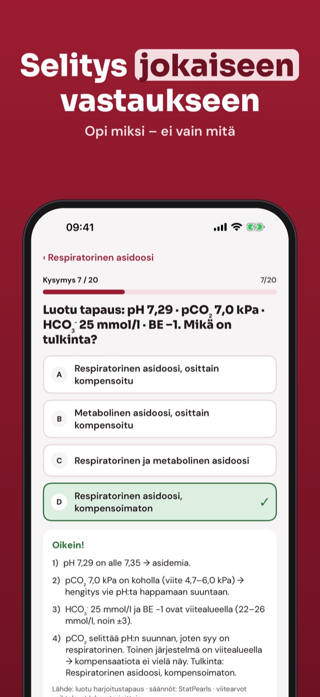
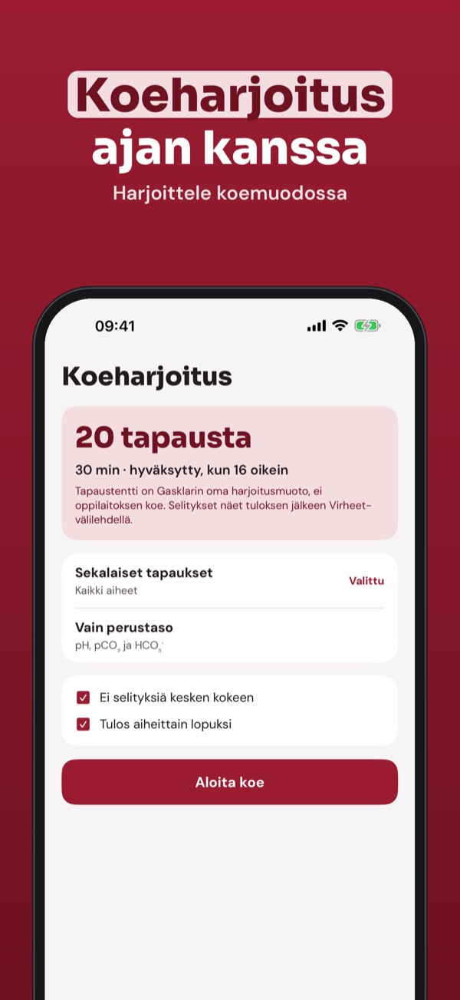
Gasklar on opetussovellus sairaanhoitaja- ja lääketieteen opiskelijoille: harjoittele valtimoverikaasujen tulkintaa luoduilla tapauksilla.
Voit harjoitella 20 kysymystä, sanastoa ja tarkistuslistaa ilman ostoa. Täysi versio on kertaosto, joka avaa kaikki kysymykset, koeharjoitukset ja tilastot. Ei tilausta.
Gasklar on itsenäinen opetussovellus. Kaikki tapaukset on keksitty; sovellus ei analysoi oikeita potilasarvoja eikä sovellu hoitopäätöksiin.
Terms of Use (EULA): https://www.apple.com/legal/internet-services/itunes/dev/stdeula/
Privacy: https://baytechbv.github.io/privacy/blutgas-eu/
Zuur-base oefenen met casussen
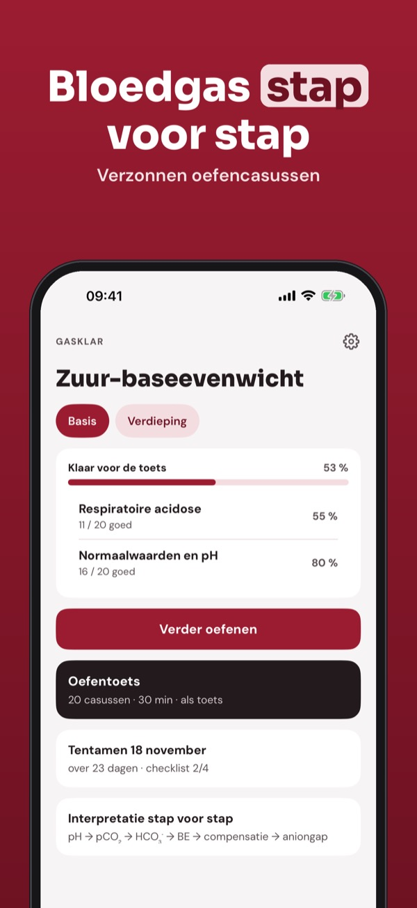
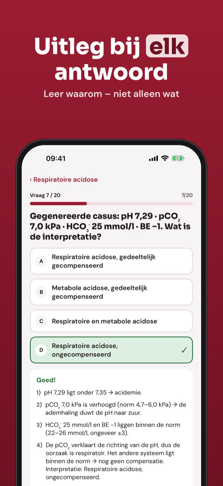
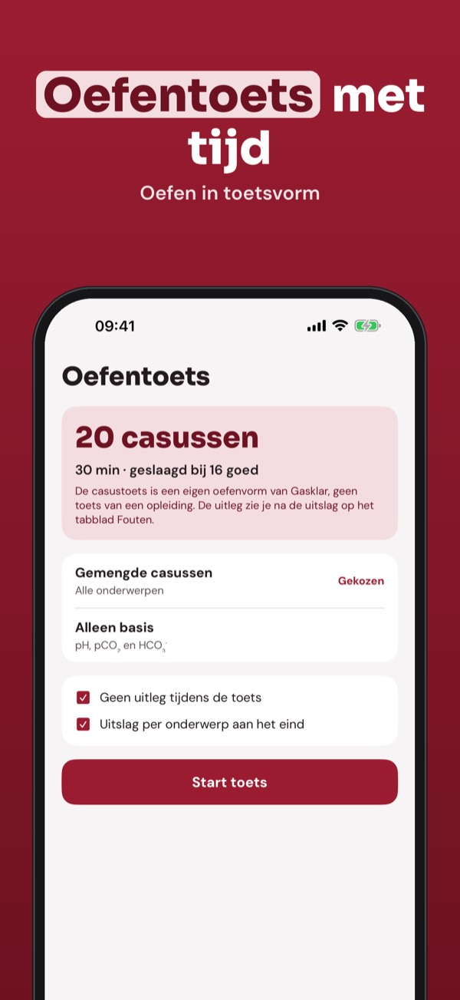
Gasklar is een leerapp voor studenten verpleegkunde en geneeskunde: oefen het interpreteren van arteriële bloedgassen met gegenereerde casussen.
Je kunt 20 vragen, de begrippenlijst en de checklist zonder aankoop gebruiken. De volledige versie is een eenmalige aankoop die alle vragen, proefexamens en statistiek ontgrendelt. Geen abonnement.
Gasklar is onafhankelijk. Alle casussen zijn verzonnen; de app analyseert geen patiëntwaarden en is niet bedoeld voor behandelbeslissingen.
Terms of Use (EULA): https://www.apple.com/legal/internet-services/itunes/dev/stdeula/
Privacy: https://baytechbv.github.io/privacy/blutgas-eu/
Säure-Basen üben mit Fällen
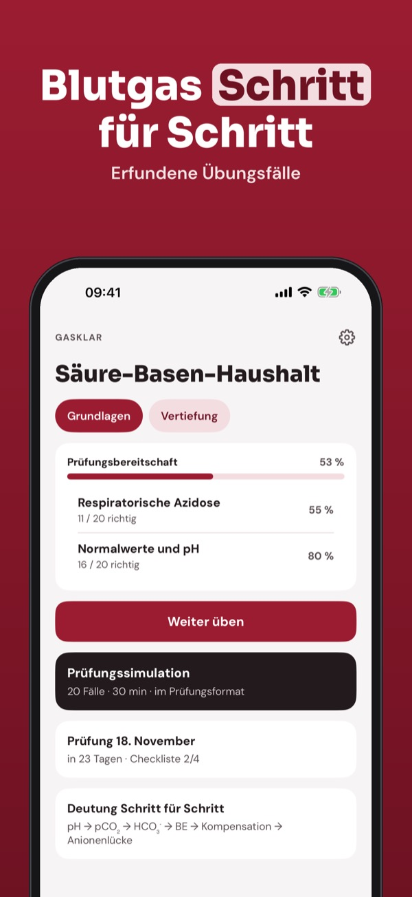
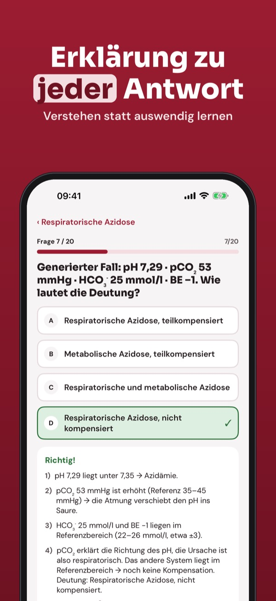
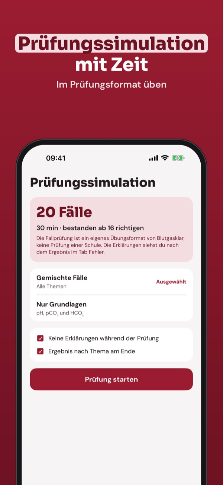
Blutgasklar ist eine Lern-App für Pflegeausbildung und Medizinstudium: Übe die Deutung arterieller Blutgase mit generierten Fällen.
20 Fragen, die Begriffe und die Checkliste kannst du ohne Kauf nutzen. Die Vollversion ist ein Einmalkauf und schaltet alle Fragen, Simulationen und die Statistik frei. Kein Abo.
Blutgasklar ist unabhängig. Alle Fälle sind erfunden; die App analysiert keine Patientenwerte und ist nicht für Therapieentscheidungen gedacht.
Terms of Use (EULA): https://www.apple.com/legal/internet-services/itunes/dev/stdeula/
Privacy: https://baytechbv.github.io/privacy/blutgas-eu/
Syre-base med øvingskasus
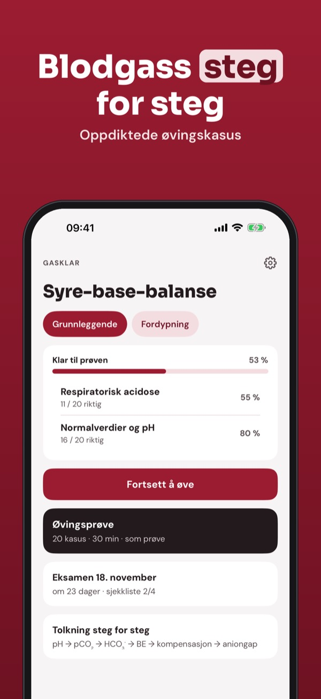
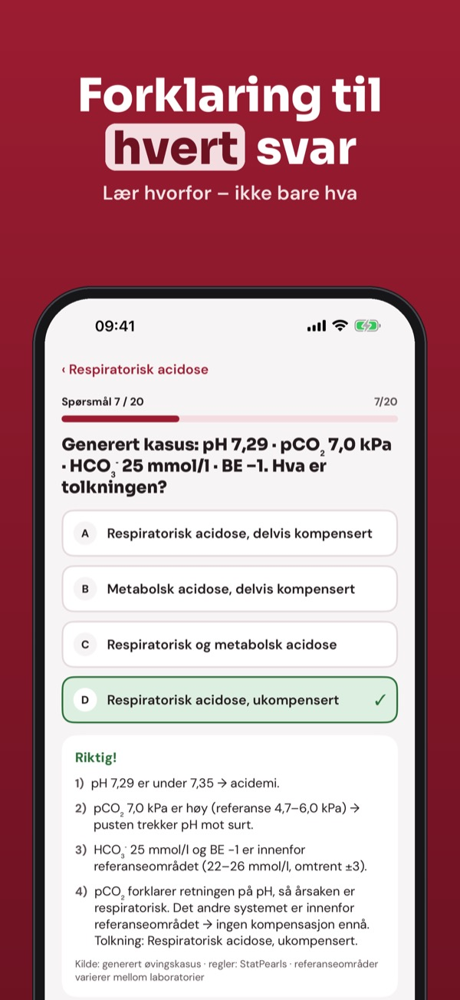
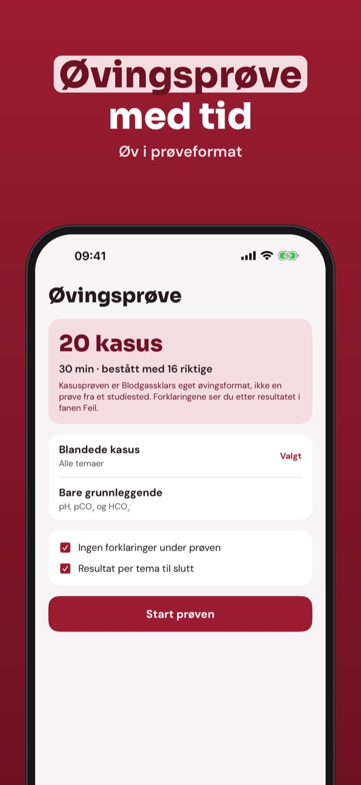
Blodgassklar er en læringsapp for sykepleier- og medisinstudenter: øv på å tolke arterielle blodgasser med genererte kasus.
Du kan øve på 20 spørsmål, ordlisten og sjekklisten uten kjøp. Fullversjonen er et engangskjøp som låser opp alle spørsmål, prøvetester og statistikk. Ingen abonnement.
Blodgassklar er uavhengig. Alle kasus er oppdiktet; appen analyserer ikke pasientverdier og skal ikke brukes til behandlingsbeslutninger.
Terms of Use (EULA): https://www.apple.com/legal/internet-services/itunes/dev/stdeula/
Privacy: https://baytechbv.github.io/privacy/blutgas-eu/
Syra-bas med övningsfall
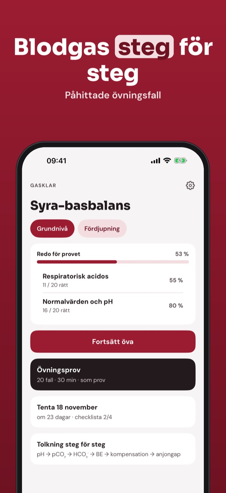
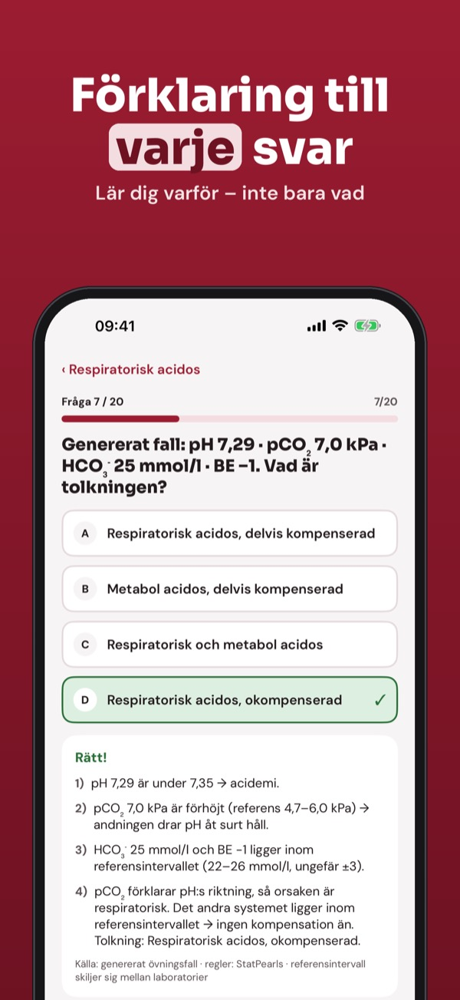
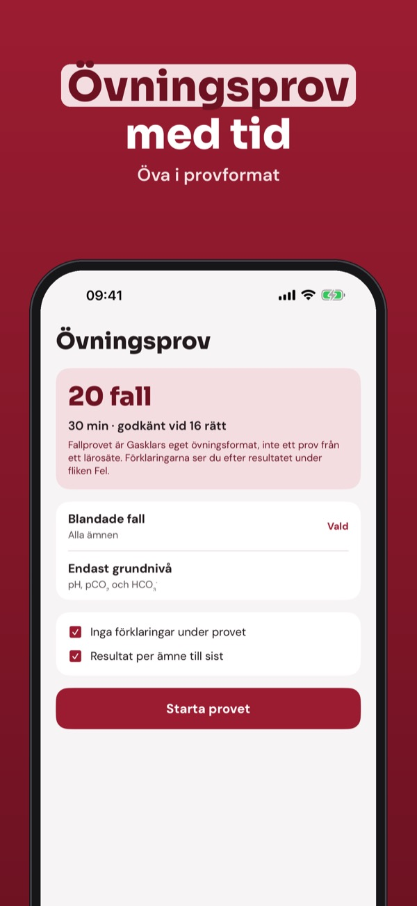
Gasklar är en studieapp för sjuksköterske- och läkarstudenter: öva att tolka arteriella blodgaser med genererade fall.
Du kan öva 20 frågor, ordlistan och checklistan utan köp. Fullversionen är ett engångsköp som låser upp alla frågor, övningsprov och statistik. Ingen prenumeration.
Gasklar är fristående. Alla fall är påhittade; appen analyserar inte patientvärden och ska inte användas för vårdbeslut.
Terms of Use (EULA): https://www.apple.com/legal/internet-services/itunes/dev/stdeula/
Privacy: https://baytechbv.github.io/privacy/blutgas-eu/
Syre-base med øvelsescases
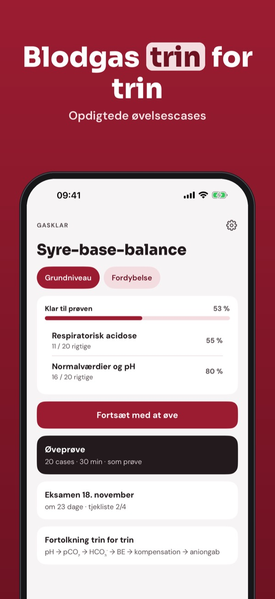
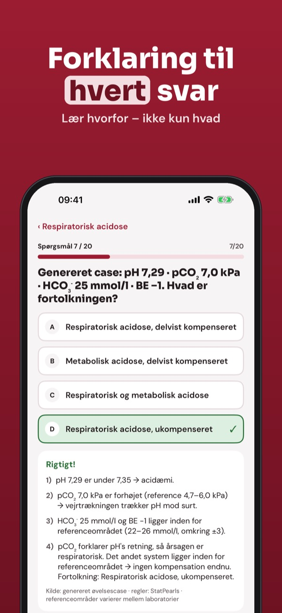
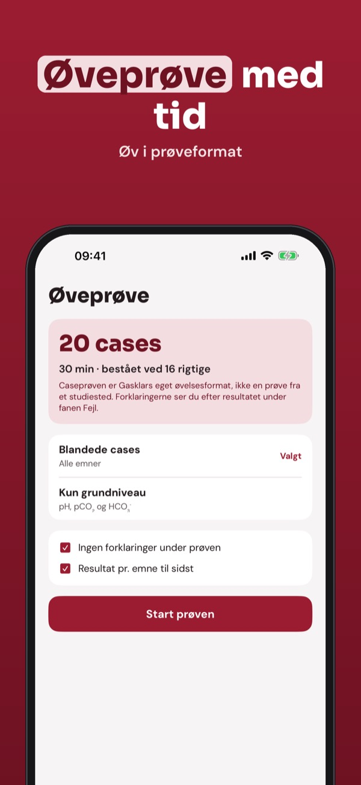
Gasklar er en læringsapp for sygepleje- og medicinstuderende: øv fortolkning af arterielle blodgasser med genererede cases.
Du kan øve 20 spørgsmål, ordlisten og tjeklisten uden køb. Den fulde version er et engangskøb, der låser alle spørgsmål, prøveeksamener og statistik op. Intet abonnement.
Gasklar er uafhængig. Alle cases er opdigtede; appen analyserer ikke patientværdier og må ikke bruges til behandlingsbeslutninger.
Terms of Use (EULA): https://www.apple.com/legal/internet-services/itunes/dev/stdeula/
Privacy: https://baytechbv.github.io/privacy/blutgas-eu/